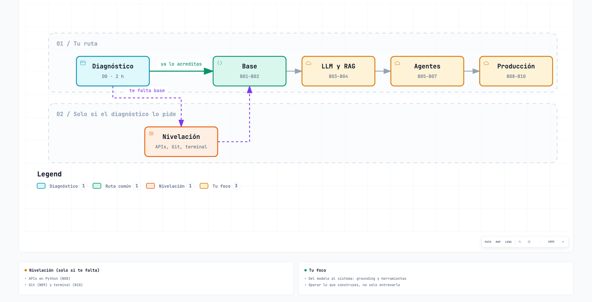
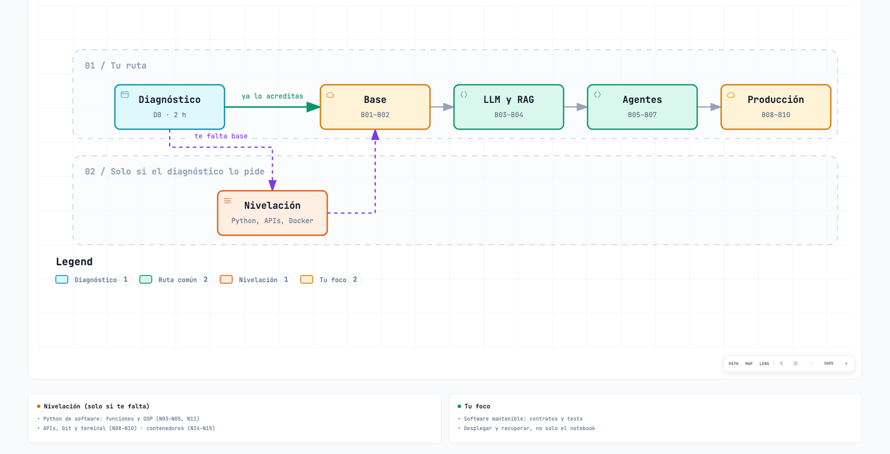
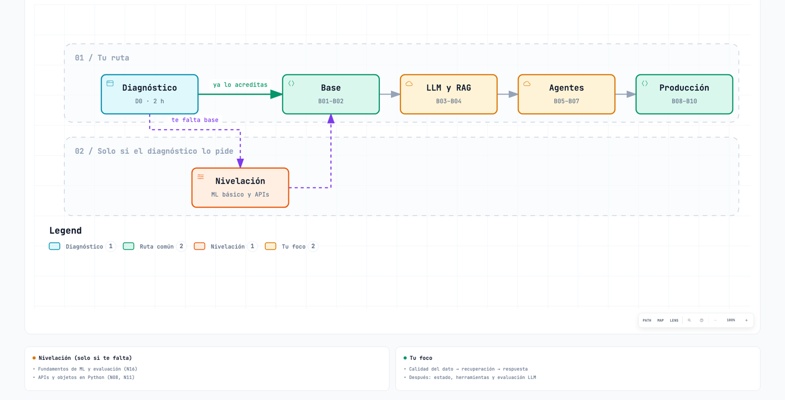
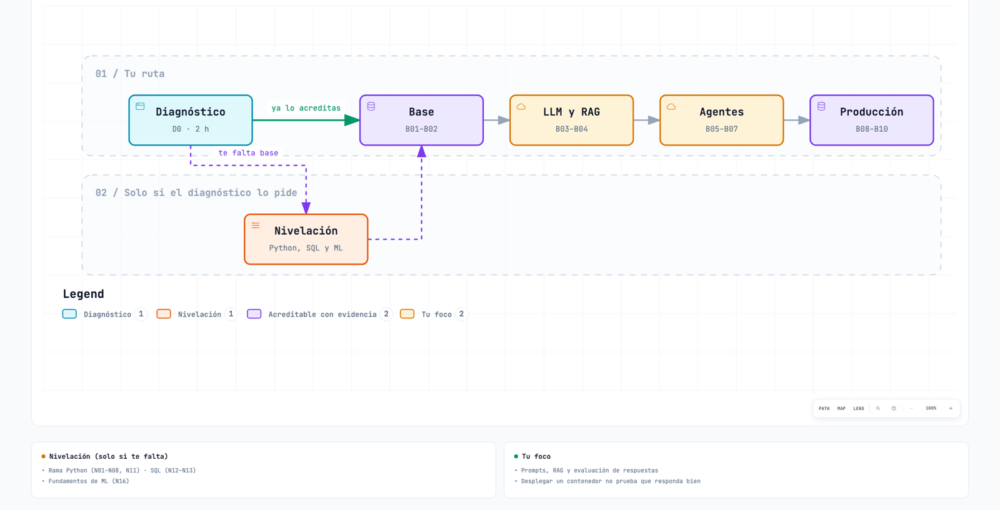
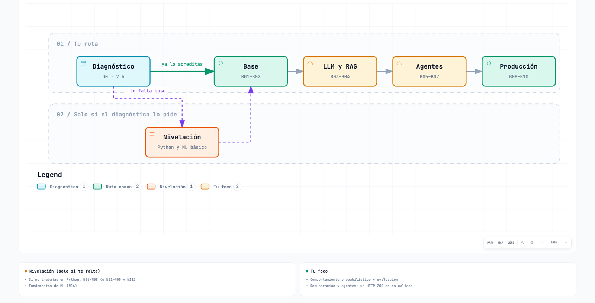
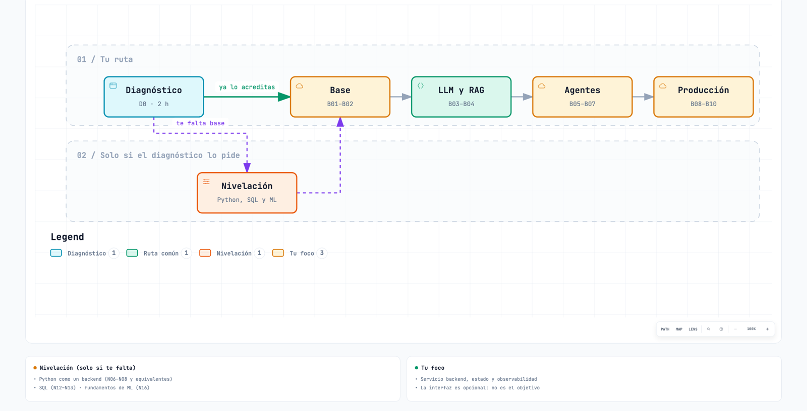

ERNI · Roadmap AI Engineer
Tu ruta
Diagnóstico de entrada, rutas según tu perfil y el recorrido completo.
Diagnóstico de entrada
D0 · 2 h orientativas de preparación y revisión de evidencias. No hay exenciones por puesto, años ni certificados solamente.
- Presentas un repositorio o ejemplo propio sanitizado y explicas cómo funciona. El mentor comprueba seis capacidades: Python, API, Git y terminal, SQL/datos, ML/LLM y plataforma.
- Salida:
docs/diagnostico.mdcon capacidad, evidencia, resultado «acreditada / refuerzo», cursos necesarios, mentor y fecha. Acreditar conocimientos equivalentes evita repetir el curso de nivelación; no exige matricularse para obtener un certificado. - Hay dos ramas introductorias de Python (N01–N05, de datos; N06–N08, de desarrollo) porque las fichas tienen prerrequisitos distintos. No repites ambas desde cero si D0 demuestra los contenidos coincidentes; el mentor registra la equivalencia, incluidas las capacidades que pide cada ficha.
Capacidades, evidencia mínima y cursos si faltan
| Capacidad | Evidencia suficiente para no repetir fundamentos | Si falta |
|---|---|---|
| Python | Ejecutar un módulo; explicar funciones, clases, excepciones, iteradores y dependencias; corregir un fallo pequeño de un ejemplo propio | N01–N07 y N11 según la carencia |
| API | Consumir una API JSON, distinguir petición/respuesta, autenticación y errores; probar una entrada inválida | N08, después de N06–N07 |
| Git y terminal | Leer un diff e historial; reproducir la ejecución desde un directorio limpio y gestionar configuración sin publicar secretos | N09 y N10 |
| SQL/datos | Consultar filas por identificador y ámbito, filtrar y agregar; explicar una carga idempotente y una versión de datos | N12–N14 |
| ML/LLM | Diferenciar entrenamiento e inferencia, modelo y aplicación; explicar particiones de evaluación, error y límites de una respuesta generada | N16 antes de C06 |
| Plataforma | Distinguir imagen, contenedor y máquina virtual; explicar límites de acceso y coste | N14–N15; B02 sigue formando parte de la ruta |
Nivelación con cursos enlazados
Solo haces los cursos que D0 asigne. Fichas consultadas el 07/09/2026; cada fila indica los capítulos exactos (con sus ejercicios) y el orden lo marca «Antes», no el catálogo.
- Cuándo: N01–N13 pendientes, antes de B01; N16 antes de B03; N14–N15 antes de B08. Puedes adelantarlos todos durante la nivelación. La tabla respeta dependencias: N11 necesita N05, que depende de N04 → N03 → N02 → N01.
- Carga: la suma nominal de los dieciséis cursos es 46 h 45 min, pero no es obligatoria para todos; se añade solo lo asignado, más 4 h propias de práctica/revisión (ampliar si no basta, no rebajar el criterio).
Tabla de cursos de nivelación (N01–N16)
| ID | Curso de DataCamp | Antes | Capítulos | Duración publicada |
|---|---|---|---|---|
| N01 | Introduction to Python | Ninguno | 1–4, completos | 4 h |
| N02 | Intermediate Python | N01 | 1–5, completos | 4 h |
| N03 | Introduction to Functions in Python | N02 | 1–3, completos | 3 h |
| N04 | Python Toolbox | N03 | 1–3, completos | 4 h |
| N05 | Writing Functions in Python | N04 | 1–4, completos | 4 h |
| N06 | Introduction to Python for Developers | Ninguno | 1–3, completos | 3 h |
| N07 | Intermediate Python for Developers | N06 | 1–3, completos | 2 h |
| N08 | Introduction to APIs in Python | N07 | 1–2, completos | 2 h |
| N09 | Introduction to Git | Ninguno | 1–2, completos | 2 h |
| N10 | Introduction to Shell | Ninguno | 1–5, completos | 4 h |
| N11 | Introduction to Object-Oriented Programming in Python | N05 | 1–3, completos | 3 h |
| N12 | Introduction to SQL | Ninguno | 1, completo | 45 min; rango 30–60 min |
| N13 | Intermediate SQL | N12 | 1–4, completos | 5 h; rango 4–6 h |
| N14 | Understanding Data Engineering | Ninguno | 1–3, completos | 2 h |
| N15 | Containerization and Virtualization Concepts | N14 | 1–2, completos | 2 h |
| N16 | Understanding Machine Learning | Ninguno | 1–3, completos | 2 h |
Se usan los metadatos actuales de N12 (45 min, rango 30–60 min) y N13 (5 h, rango 4–6 h), no las antiguas descripciones promocionales que aún mencionan otras duraciones.
Entrega y aceptación de la nivelación
Entrega: docs/nivelacion.md con enlaces o constancias de los cursos completados y un ejemplo reproducible por capacidad que faltaba.
- Python: transformar registros y manejar un registro inválido.
- APIs: petición correcta y fallo controlado.
- SQL: filtros y agregación sobre doce registros ficticios.
- Git/terminal: reconstruir el ejemplo desde su README.
- ML: justificar la separación de datos de desarrollo y test.
- Contenedores: explicar qué empaqueta una imagen y qué queda fuera.
Aceptación: el mentor vuelve a comprobar únicamente las capacidades pendientes de D0.
Rutas de entrada
Todos llegáis al mismo sitio por el mismo camino. Solo cambia por dónde empiezas.
- Diagnóstico (D0, 2 h con tu mentor). Enseñas algo tuyo y el mentor comprueba qué ya dominas.
- Nivelación, solo si D0 detecta un hueco. Haces únicamente los cursos de ese hueco (ver la lista de cursos). Si no hay hueco, te la saltas.
- Ruta común B01 → B10, igual para todos. Mismas diez entregas y mismo nivel de exigencia al final.
Cómo leer cada diagrama: la flecha verde «ya lo acreditas» va directa a la ruta; la línea discontinua es el desvío por la nivelación. Los bloques del color «Tu foco» son donde más vas a tener que crecer viniendo de tu perfil.
Resumen por perfil
| Tu perfil | Nivelación típica (solo si D0 la pide) | Dónde más vas a crecer |
|---|---|---|
| ML Engineer | APIs, Git y terminal | Pasar del modelo a un sistema que responde con citas, usa herramientas y se opera |
| Data Scientist | Python de software, APIs, Git y contenedores | Código mantenible, tests, despliegue y recuperación |
| Data Engineer | Fundamentos de ML y APIs | Llevar la calidad del dato a la calidad de la respuesta |
| DevOps | Python, SQL y fundamentos de ML | Prompts, RAG y evaluar si las respuestas son buenas |
| Backend Developer | Python (si no es tu lenguaje) y ML | Sistemas probabilísticos: evaluación, RAG y agentes |
| Fullstack Developer | Python, SQL y ML | El servicio backend: estado y observabilidad |
ML Engineer → AI Engineer

- Lo que ya traes: Python, ML y datos. En D0 lo demuestras con un ejemplo propio; no se da por sabido.
- Nivelación, si te falta: APIs → N08 Introduction to APIs in Python. Git → N09 Introduction to Git. Terminal → N10 Introduction to Shell.
- Tu foco: pasar del modelo al sistema. Respuestas con citas (B03–B04), herramientas y agentes (B05–B07) y operar lo que construyes (B08–B10).
Data Scientist → AI Engineer

- Lo que ya traes: análisis, ML y notebooks.
- Nivelación, si te falta:
- Si solo trabajas en notebooks → N03 Introduction to Functions in Python, N04 Python Toolbox, N05 Writing Functions in Python y N11 Introduction to Object-Oriented Programming in Python.
- APIs, Git y terminal → N08, N09 y N10.
- Contenedores → N14 Understanding Data Engineering y N15 Containerization and Virtualization Concepts.
- Tu foco: software que otros pueden mantener: contratos, tests, despliegue y recuperación (B01–B02 y B08–B10).
Data Engineer → AI Engineer

- Lo que ya traes: pipelines, SQL y calidad del dato.
- Nivelación, si te falta: evaluación de modelos → N16 Understanding Machine Learning. APIs u objetos en Python → N08 Introduction to APIs in Python y N11 Introduction to Object-Oriented Programming in Python.
- Tu foco: llevar la calidad del dato a la calidad de la respuesta. Primero RAG (B03–B04); después estado, herramientas y evaluación de LLM (B05–B07).
DevOps → AI Engineer con foco operativo

- Lo que ya traes: plataforma, contenedores, CI/CD y nube.
- Nivelación, si te falta: Python → la rama N01–N08 y N11, solo lo que falte. SQL → N12 Introduction to SQL y N13 Intermediate SQL. ML → N16 Understanding Machine Learning.
- Puedes acreditar con evidencia la parte de plataforma de B02, B08 y B09: te ahorras el estudio, no la entrega ni sus pruebas.
- Tu foco: prompts, RAG y evaluación (B03–B07). Que un contenedor arranque no demuestra que las respuestas sean correctas.
Backend Developer → AI Engineer

- Lo que ya traes: APIs, servicios y tests.
- Nivelación, si te falta: si no trabajas en Python → N06 Introduction to Python for Developers, N07 Intermediate Python for Developers y N08 Introduction to APIs in Python (y N01–N05 y N11 si hace falta más base). ML → N16 Understanding Machine Learning.
- Tu foco: sistemas que no siempre responden igual: datos de evaluación, RAG y agentes (B03–B07). Un HTTP 200 no significa que la respuesta sea buena.
Fullstack Developer → AI Engineer

- Lo que ya traes: frontend y backend.
- Nivelación, si te falta: Python, igual que Backend Developer. SQL → N12 Introduction to SQL y N13 Intermediate SQL. ML → N16 Understanding Machine Learning.
- Tu foco: el servicio backend, su estado y su observabilidad (B01–B02, B05–B07 y B08–B10). La interfaz del caso final es opcional y no sustituye la API, la evaluación ni la operación.
Convalidar un bloque común: si ya dominas un curso, puedes saltarte su estudio, pero no su entrega. Presentas la evidencia de la entrega E correspondiente, el mentor la revisa y queda registrado qué se convalida. No se convalida B09 por conocer otra nube ni B05 por haber usado un panel de logs. El calendario solo se acorta después de esa revisión.
Ruta completa de un vistazo
Los IDs C son cursos; E, entregas propias; B, bloques. Dentro de cada bloque se sigue el orden mostrado. «Curso completo» = todos los capítulos y ejercicios de la ficha, no solo los vídeos.
| Bloque | Cursos en orden | Entrega | Dedicación base |
|---|---|---|---|
| B01 · Ingeniería Python y API | C01 → C02 | E01 | 8 h cursos + 6 h práctica + 1 h revisión = 15 h |
| B02 · AWS, identidad y coste | C03 → C04 → C05 | E02 | 8 h cursos + 4 h práctica + 1 h revisión = 13 h |
| B03 · LLM y contexto | C06 → C07 → C08 → C09 → C10 → C11 | E03 | 15 h cursos + 6 h práctica + 1 h revisión = 22 h |
| B04 · Embeddings y RAG | C12 → C13 → C14 | E04 | 9 h cursos + 10 h práctica + 1 h revisión = 20 h |
| B05 · Evaluación antes de agentes | C15 → C16 | E05 | 5 h cursos + 8 h práctica + 1 h revisión = 14 h |
| B06 · Tools y LangGraph | C17 → C18 | E06 | 6 h cursos + 8 h práctica + 1 h revisión = 15 h |
| B07 · MCP y conectores | C19 | E07 | 3 h cursos + 6 h práctica + 1 h revisión = 10 h |
| B08 · API segura y Docker | C20 → C21 | E08 | 8 h cursos + 6 h práctica + 1 h revisión = 15 h |
| B09 · Entrega en AWS | C22 → C23 → C24 | E09 | 10 h cursos + 8 h práctica + 1 h revisión + 1 h lectura AWS = 20 h |
| B10 · Operación y defensa final | C25 | E10 | 3 h cursos + 6 h práctica + 1 h revisión = 10 h |
Regla de secuencia: no empieces una práctica que dependa de una entrega no aceptada (sí puedes adelantar lectura independiente). B05 (evaluación) precede a B06 (agentes) porque los cursos de tools/LangGraph la exigen y hay que medir el cambio que introduce el agente.